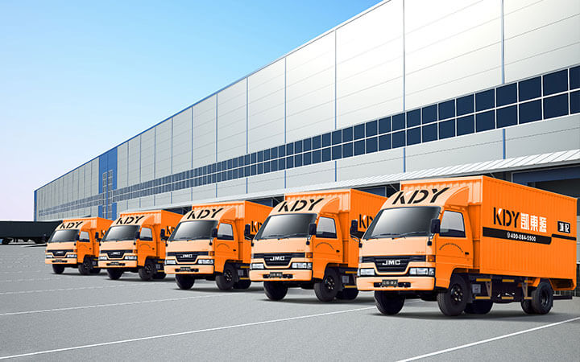
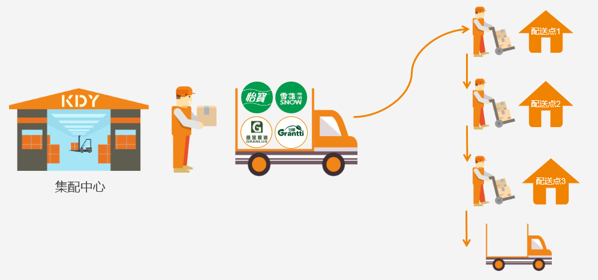
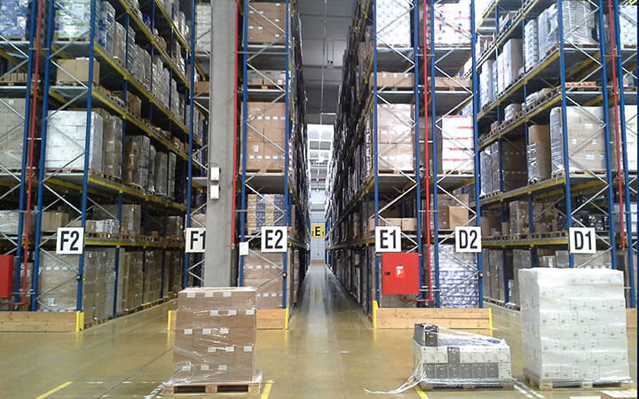

<!DOCTYPE html>
<html lang="en">
<head>
	<meta charset="UTF-8">
	<title>仓配一体-凯东源城配官网-专业的快消品城市配送服务商</title>
	<meta name="keywords"  content="仓库租赁、仓库出租、商超配送、超市配送、门店配送、便利店配送、城市配送、快消品城配、仓配一体化、供应链优化、流通服务商" />

	<meta name="description" content="凯东源城配可以为企业级客户提供仓库租赁、仓库托管、同城物流配送、商超配送、连锁便利店配送，涵盖仓到仓、仓到店等多种配送形式，能为客户提供分拣、分装、贴标、一件代发等增值服务。另有“流通服务商”模式专为品牌商提供快消品供应链优化服务。" />
	<link rel="stylesheet" href="css/reset.css">
	<link rel="stylesheet" type="text/css" href="css/services.css">
	<link rel="stylesheet" href="iconfont/iconfont.css">
	<link rel="icon" href="images/LOGO.png">
	<script src='js/jquery-1.12.3.min.js'></script>
	<style type="text/css">
		
	</style>
</head>
<body>
	<!-- 头部开始 -->
	<header>
	</header>
	<!-- 加载头部内容 -->
	<script src="head.js"></script>
	<!-- 头部结束 -->

	<!-- 主体内容开始 -->
	<div class="container">
	</div>
	<!-- 主体内容结束 -->

	<!-- 尾部开始 -->
	<footer>
		<div class="Foot_Bottom">
			<div id="NetworkSupervision">
				<script id="ebsgovicon" src="http://szcert.ebs.org.cn/govicon.js?id=a3f48d97-dcb7-48b3-92ed-755f3d9fbc58&width=75&height=105&type=1" type="text/javascript" charset="utf-8"></script>
			</div>
		</div>
	</footer>
	<!-- 尾部结束 -->

	<!-- 加载头部和尾部内容 -->
	<script src="load_common.js"></script>
	<script>

		addHtml("images/services/cangchu1.jpg","Product","Services","产品服务",'<li class="WarehousingService"><a href="WarehousingService.html">仓储服务</a></li><li class="DistributionService"><a href="DistributionService.html">配送服务</a></li><li class="WarehouseIntegration"><a href="./WarehouseIntegration.html">仓配一体</a></li><li class="Value-added_logistics_service"><a href="Value-added_logistics_service.html">增值服务</a></li><li class="CirculationService"><a href="CirculationService.html">流通服务</a></li><li class="VendingMachine"><a href="VendingMachine.html">自动售货机</a></li>',"仓配一体","WAREHOUSE&DISTRIBUTION INTEGRATION SERVICES",'<p>传统简单的进、销、存管理已经满足不了现在现代物流服务的需求，单点、单仓也无法满足现代物流的下一步发展，凯东源推出高效率、低成本、综合性的仓配一体化服务产品，借助仓配一体化来提升客户体验。仓配一体化的优势在于通过仓和配的结合，将订单预处理、执行计划、库内作业、发运配送、拒收返回以及上下游的账务清分等全部统一起来，高效完成客户作业需求，实现现代物流的一站式服务。</p><div class="Tab"><div class="tabHead"><div class="tabFirst"><div></div><span>统仓共配</span></div><div><div></div><span>电商前置仓</span></div></div><div class="tabContent"><div class="tab_content_first"><h4>服务模式：</h4><div style="margin-bottom:20px;"><p>1、仓配一体化服务：仓储+库内运营+配送</p><p>2、仓储服务：仓储+库内运营</p><p>3、租仓服务：仓库租赁</p><p>4、库内运营服务：库内管理</p><p>5、配送服务：提货运输、配送</p></div><h4 class="special">绿色——减少碳排放</h4><h4 class="special">降本——降低客户配送成本</h4></div><div><p>“电商前置仓”区别于传统仓库远离最终消费人群的模式，在消费者附近建立仓库的一种模式。结合当今电商行业形势来看，未来市场的主流组成、订单的主要承载还是在前置仓，现在的零售业，更多的是通过供应链前置和销售设备前置，来完成线下流量回收。</p><p>顺应电商行业的发展，“前置仓+7小时送达”为客户解决“最后一公里”的痛点。我们可以做到分段运输，主干优先，分级集结，降维扩散等，结合完善的信息化管理系统，实现线上线下库存信息共享，商品存量打通。</p></div></div></div>');

		$(".Tab>.tabHead>div").click(function(){
			$(this).attr('class','tabFirst').siblings().removeClass('tabFirst');
			$('.tabContent>div').eq($(this).index()).fadeIn(100).siblings().fadeOut(20);
		})
	</script>
	<script>
		var  _hmt  =  _hmt  ||  [];
		(function()  {
		    var  hm  =  document.createElement("script");
		    hm.src  =  "https://hm.baidu.com/hm.js?300f74f8e279b0f9f25bb5d51c900a3f";
		    var  s  =  document.getElementsByTagName("script")[0];  
		    s.parentNode.insertBefore(hm,  s);
		})();
	</script>
</body>
</html>
<!-- 

	<div class="Tab">
				<div class="tabHead">
					<div class="tabFirst">
						<div></div>
						<span>统仓共配</span>
					</div>
					<div>
						<div></div>
						<span>电商前置仓</span>
					</div>
				</div>
				<div class="tabContent">
					<div class="tab_content_first">
						<h4>服务模式：</h4><div style="margin-bottom:20px;"><p>1、仓配一体化服务：仓储+库内运营+配送</p><p>2、仓储服务：仓储+库内运营</p><p>3、租仓服务：仓库租赁</p><p>4、库内运营服务：库内管理</p><p>5、配送服务：提货运输、配送</p></div><h4 class="special">绿色——减少碳排放</h4><h4 class="special">降本——降低客户配送成本</h4>
					</div>
					<div><p>“电商前置仓”区别于传统仓库远离最终消费人群的模式，在消费者附近建立仓库的一种模式。结合当今电商行业形势来看，未来市场的主流组成、订单的主要承载还是在前置仓，现在的零售业，更多的是通过供应链前置和销售设备前置，来完成线下流量回收。</p><p>顺应电商行业的发展，“前置仓+7小时送达”为客户解决“最后一公里”的痛点。我们可以做到分段运输，主干优先，分级集结，降维扩散等，结合完善的信息化管理系统，实现线上线下库存信息共享，商品存量打通。</p></div>
				</div>
			</div>


					<div>
						<div></div>
						<span>干线落地配</span>
					</div>
					<div>
						<div></div><span>新能源大车队</span>
					</div>

					<div><p>为打造全渠道物流服务网，公司承运车队诚邀项目合伙人。</p><div><p>·自主运营</p><p>·独立核算</p><p>·利润分成</p><p>·品牌共享</p><p>·系统支持</p><p>·稳定货源</p><p>·资金支持</p></div><h4>加盟条件：</h4><div><p>·有意向从事物流行业，高中及以上文凭</p><p>·有创业梦想，热爱物流，熟悉物流运输</p><p>·有一定经济实力和团队管理经验</p><p>·在当地有运力和资源者优先合作</p></div></div>

·自主运营
·独立核算
·利润分成
·品牌共享
·系统支持
·稳定货源
·资金支持
加盟条件：
·有意向从事物流行业，高中及以上文凭
·有创业梦想，热爱物流，熟悉物流运输
·有一定经济实力和团队管理经验
·在当地有运力和资源者优先合作


 -->